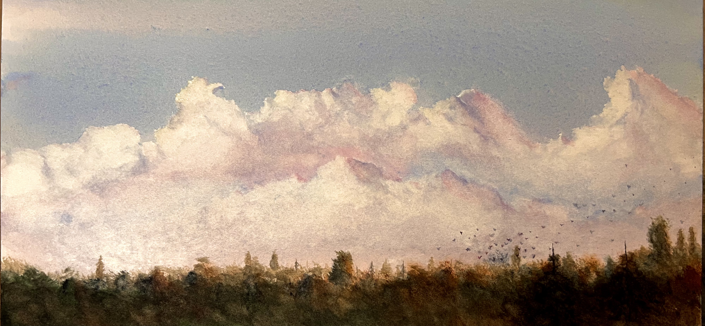
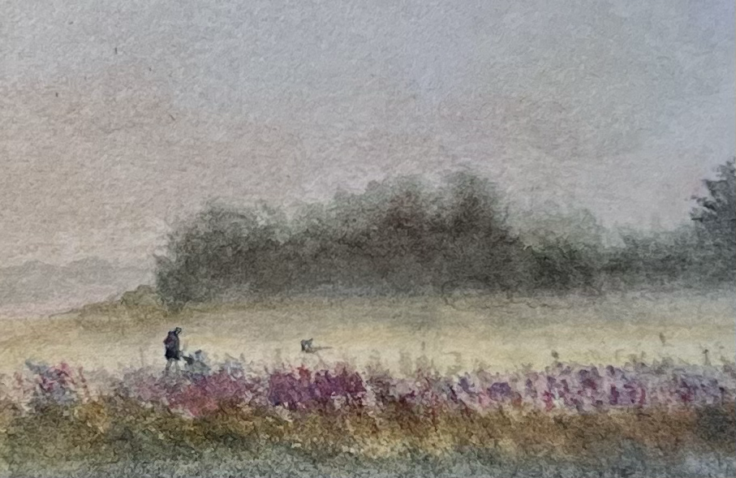
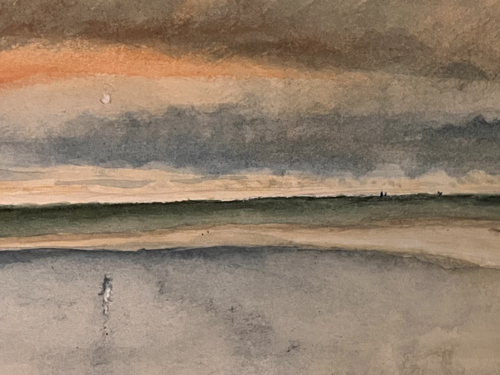

Simon is a watercolour artist based in Orford, Suffolk. Working on small-format cotton paper with a limited palette, he paints the changing Suffolk scenery — capturing moments where light quietly shapes the landscape.
A Moment in March.

Starlings Leave the Tree Line.An Angler Waits in Aldeburgh Bay.Iken Marsh, Evening Light.

Close Up: Iken Marsh, Evening Light.Winter Tree Line.Low Tide at Orford Quay.

Close Up: Low Tide at Orford Quay.